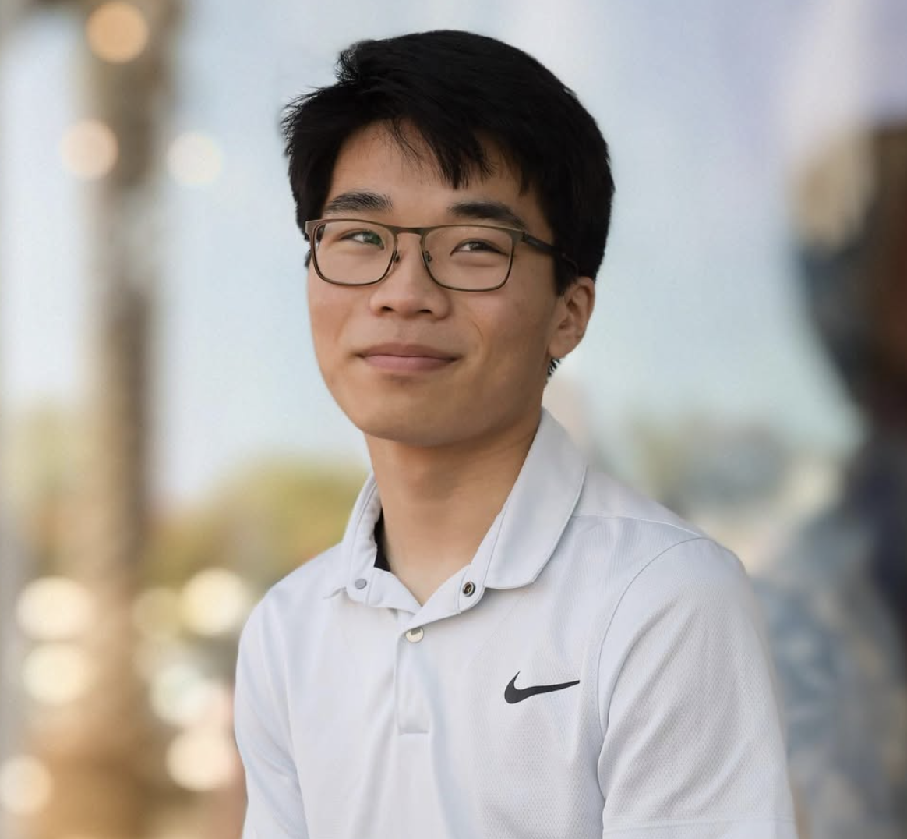

About Me
Learn more about my background and experience

Welcome
I'm a student at El Camino College studying Computer-Aided Design/Drafting. I'm passionate about creating 3D models and CAD designs. I currently work at a local technology center as an instructor, and I co-founded a startup with a couple of friends that focuses on smart parking solutions. I also do a bit of independent contracting, designing custom casings for local inventors in the South Bay area.
Skills & Expertise
- 3D Modeling & CAD Design
- Circuit Design
- Additive Manufacturing
- Embedded Systems
- Web Development
Education
Currently studying at the El Camino College for a Computer Aided Design/Drafting Associate in Science Degree